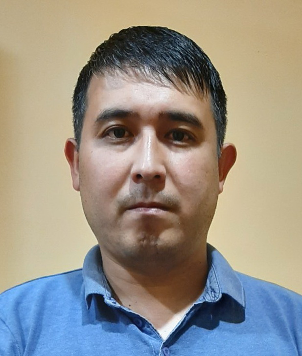

My reume.

- Mart Khayrliev
- My phone number +7(937)193-19-80. My Email mar-82@yandex.ru
- Be a Person. Not a Resume. A well-organized and outgoing Business Economics student graduating in June 2007 with good communication and analytical skills.
- Knowledge of languages Pascal, 1C, PHP, Object Pascal, Basic, Java, Assembler.
- Code examples
var s:string;
r:real;
i,j,n:integer;
begin
r:=0;
readln(s);
for i:=1 to length(s) do begin
n:=0;
for j:=1 to length(s) do begin
if s[i]=s[j] then inc(n);
end;
r:=r+1/n;
end;
writeln('количество различных букв = ', r:1:0);
end.
-
I develop an interface for accessing lessons on simulators and process the results of their passage.
link
- Belfast, Antrim | Queen's University | September 2006 - June 2011
- Intermediate